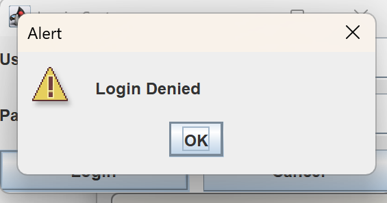
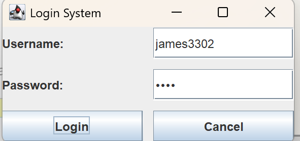
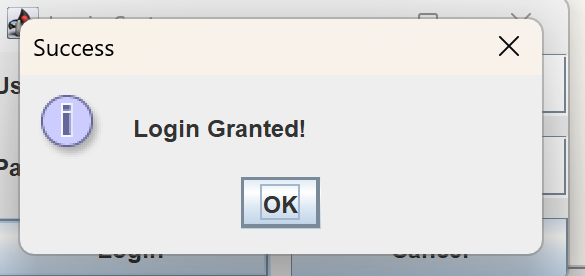
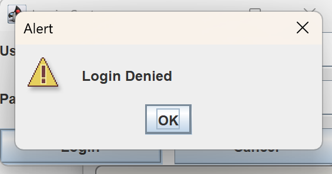
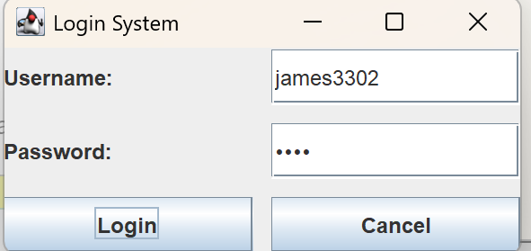
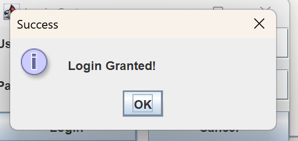
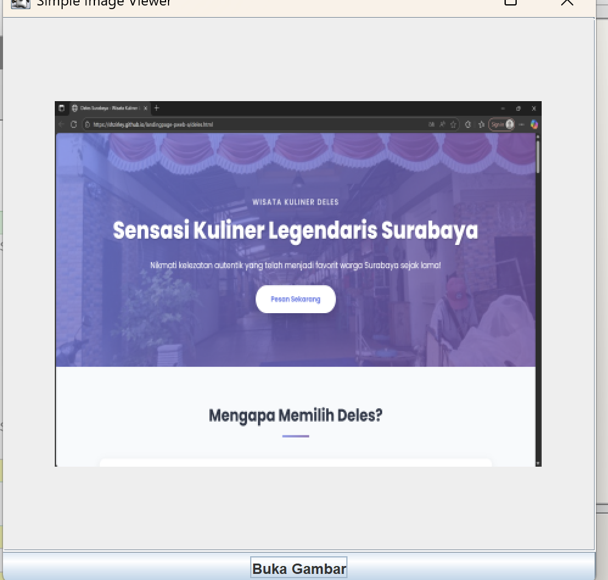
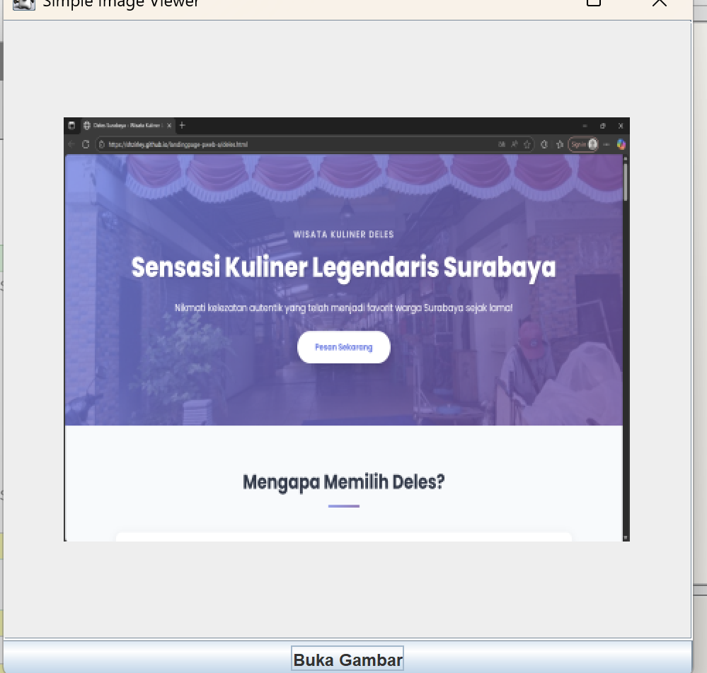

Dokumen ini menjelaskan cara kerja sistem Login dan Image Viewer yang telah dibuat menggunakan Java Swing di BlueJ.
1. Sistem Login (Class: Login.java)
Bagian ini bertindak sebagai "Gerbang Utama". Tugasnya memvalidasi apakah pengguna memiliki hak akses.
A. Tampilan (GUI)
- GridLayout: Digunakan untuk menyusun label dan kolom input agar rapi seperti tabel (baris dan kolom).
- JPasswordField: Kolom khusus untuk kata sandi. Teks yang diketik otomatis berubah menjadi titik-titik atau bintang (*) untuk keamanan.
B. Logika Program (The Logic)
- Program menyimpan data akun secara statis:
- Username:
james3302 - Password:
pass
- Username:
-
Saat tombol Login ditekan:
- Program mengambil input dari kolom username dan password.
- Password diambil sebagai array character, lalu diubah menjadi String agar bisa dibandingkan.
- Dilakukan pengecekan menggunakan
if-else.
-
Jika Login Berhasil:
- Muncul pesan "Login Granted".
- Program membuat objek baru dari kelas gambar:
new ImageViewer().go();. - Jendela Login ditutup menggunakan perintah
frame.dispose();agar layar tidak penuh.
2. Penampil Gambar (Class: ImageViewer.java)
h3>Bagian ini adalah fitur utama aplikasi yang berfungsi sebagai "Ruang Galeri".
A. Tampilan (GUI)
- JScrollPane: Fitur penggulung otomatis. Jika gambar yang dibuka ukurannya lebih besar dari layar, scroll bar akan muncul di samping.
- JLabel: Digunakan sebagai "kanvas" tempat gambar ditempelkan.
B. Logika Membuka File
- Program menggunakan
JFileChooseruntuk membuka jendela pencarian file (seperti File Explorer). - Program akan "menunggu" (pause) sampai pengguna memilih file dan menekan tombol Open.
- Setelah file dipilih, program mengambil alamat lokasi file tersebut (path).
- File diubah menjadi objek gambar menggunakan
ImageIcondan ditampilkan ke layar.
3. Hubungan Antar Class (Konsep OOP)
h3>Dalam BlueJ, terlihat garis panah yang menghubungkan kotak Login ke ImageViewer.
- Ini disebut Dependency (Ketergantungan).
- Class
Loginmembutuhkan classImageVieweruntuk berjalan. - Tanpa
ImageViewer, kode pada Login akan error karena tidak bisa memanggil halaman selanjutnya.
4. Ringkasan Alur Kerja
Berikut adalah urutan kejadian saat aplikasi dijalankan:
- Program dijalankan → Muncul jendela Login.
- User mengisi data → Klik tombol Login.
- Validasi sukses → Objek ImageViewer dibuat (instansiasi).
- Jendela Login hilang → Jendela Image Viewer muncul.
- User klik Buka Gambar → Pilih file di komputer → Gambar tampil.
Dokumentasi
 





 

berikut ini merupakan link kode saya: